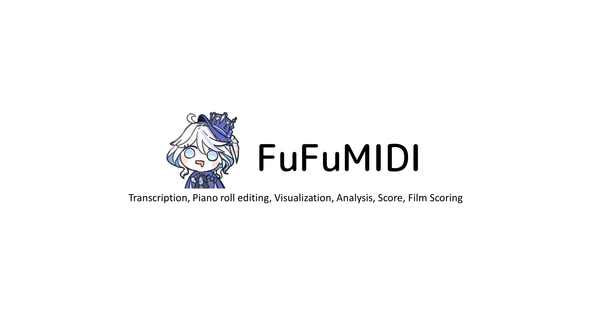

Music creation, fully offline
FuFumidi is a fully offline desktop music toolkit combining MIDI playback, editing, visualization, analysis, scoring, and transcription, with Python engines and AI models bundled in, so you can go from audio to score without a connection.

A complete music workbench
Eight tightly integrated tools that cover the whole journey from audio to score.
Piano Roll Editor
Edit notes, velocity and CC with precision down to every keystroke.
Audio Transcription
basic-pitch and CRNN piano models turn audio into MIDI in one click.
Vocal Separation
Demucs built in, extract accompaniment and vocals fast.
Waterfall Visualization
Synthesia-style keyboard waterfall for instant play-along.
Sheet Music Score
Rendered by Verovio, readable and exportable.
CC Automation
Draw pitch bend, modulation and expression curves freely.
Key Switch Mapping
Map key switches so performance feels natural.
Macro System
Record repetitive actions into one-key commands.
A workbench that shows everything
- Player, piano roll and waterfall work side by side
- Switch between score, analysis and transcription views in one click
- Themes and wallpapers, with UI polished by community contributors
Tech stack & capabilities
A lean, modern stack — Rust and Python on the desktop, WebAssembly for the heavy lifting.
Film scoring
SMPTE timecode and video sync, score along with the picture.
Runs fully offline
Python, models and soundfonts bundled; install and go.
Contributors
Two builders, one shared love for music software.